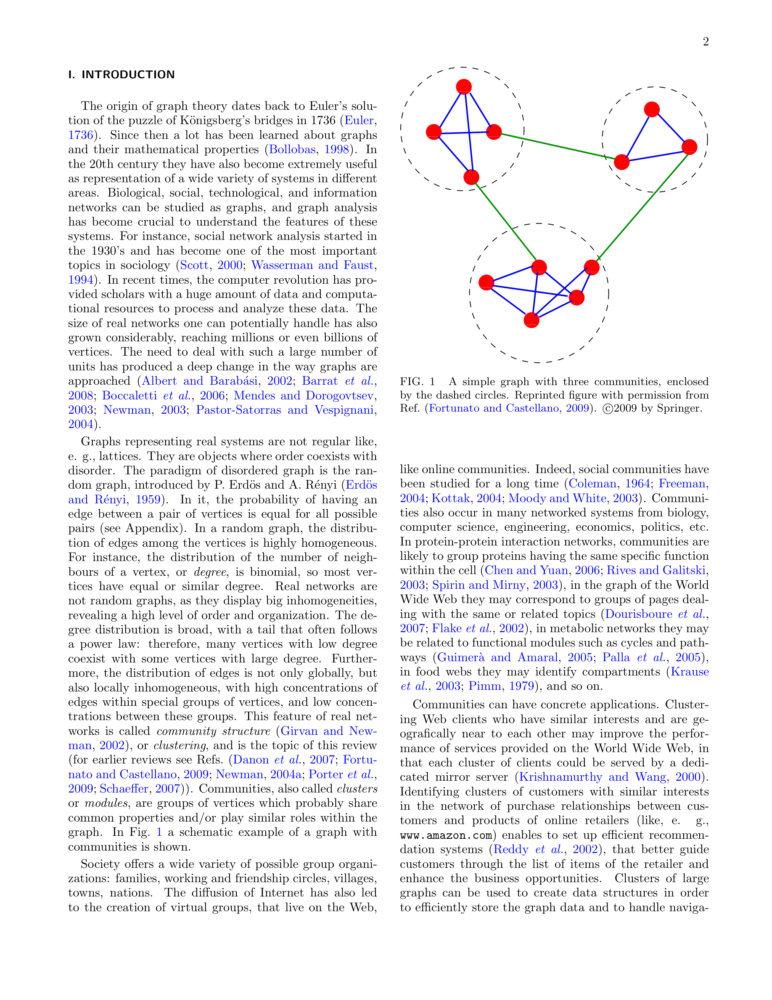

저자: Santo Fortunato | 날짜: 2010 | Journal: Physics Reports | DOI: 10.1016/j.physrep.2009.11.002 | arXiv: N/A
리뷰 모드: PDF
그래프의 커뮤니티 탐지(community detection)는 노드와 엣지로 이루어진 네트워크에서 내부 연결이 밀하고 외부 연결이 성긴 클러스터를 찾는 문제다. Fortunato(2010)의 이 리뷰 논문은 계층적 클러스터링, modularity 최적화, 스펙트럼 방법, 통계적 추론 등 주요 알고리즘 패밀리를 체계적으로 정리하고 비교하며, 해상도 한계(resolution limit of modularity)와 같은 근본적 문제점을 분석한다.

Figure 1
| 항목 | 점수 |
|---|---|
| Novelty | 3/5 |
| Technical Soundness | 5/5 |
| Significance | 5/5 |
| Clarity | 5/5 |
| Overall | 5/5 |
총평: 네트워크 커뮤니티 탐지 알고리즘 전체를 체계적으로 정리하고 한계를 분석한 포괄적 리뷰로, 10,000회 이상 피인용된 해당 분야의 표준 참고 논문이다.